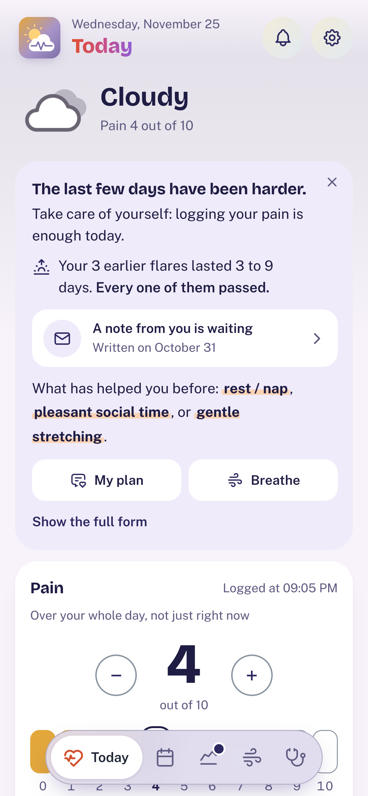

Free · open source · no account
Your pain has a weather.
One minute a day to log your pain. A few weeks to see what makes it worse and what eases it. For fibromyalgia and other chronic pain.

1 mina day
Freeno ads, no account
At homeon your phone

Your notes talk to you.Sleep, stress, a short walk… OUCH compares your days and shows what comes back when things get harder, or easier. One lead at a time, with the days behind it.
1Log
One number from 0 to 10. The rest is optional, and the screen gets lighter on hard days.
2Try
A lead speaks to you? Test it for ten days: OUCH draws the days with and without.
3Show
A report for your doctor: your curve, your treatments, your questions.
4Share
Your weather of the day for your loved ones, and simple words for your children.

Try it without typing a thing.maxauvy.github.io/OUCH
“Discover with an example”: 90 made-up days and a guided tour. Then “Add to Home Screen”.
Screenshots: made-up data. OUCH describes your notes: it diagnoses nothing and does not replace your doctor. Free software (CeCILL v2.1) · Ouch, Understand, Chart, Heal.